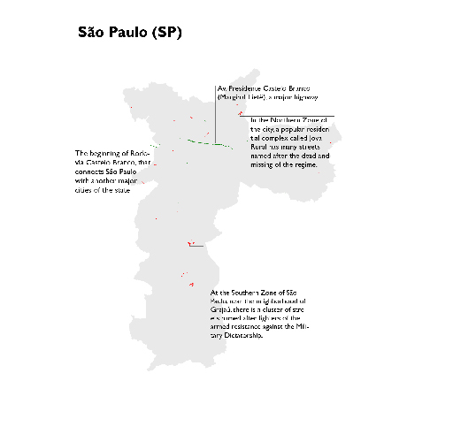
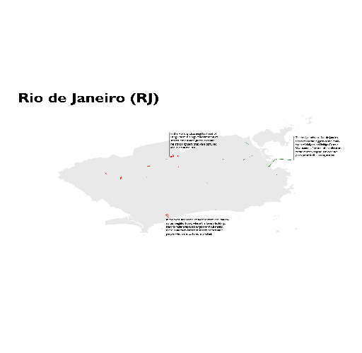

Monumento Tortura Nunca Mais, em Recife-PE. Licença Wikimedia Commons.
Por menos de 200 metros, uma rua no centro de São Paulo leva o nome de Vladimir Herzog. Ela homenageia o jornalista que foi torturado e morto pela Ditadura Militar – regime autoritário que governou o país por 21 anos, de 1964 até 1985.
O começo da Avenida Presidente Castelo Branco, parte do complexo de vias que forma a Marginal Tietê e corta a metrópole de leste à oeste, está a menos de 500 metros de distância. Ela foi batizada em referência ao general que tomou o poder no Golpe de 1964 – ou na "Revolução de 64", como as apoiadores do regime preferem chamar. Ele ajudou a iniciar o processo que, no final das contas, culminou na morte de Vladimir Herzog e ao menos mais 433 pessoas.
A coexistência de homenagens a figuras históricas tão distintas em locais tão próximos não é algo excepcional. Em todo o território do Brasil, muitas ruas foram nomeadas em referência a oficiais e colaboreadores da Junta Militar – até mesmo em referência àqueles que estão entre os 377 que, de acordo com a Comissão Nacional da Verdade, um comitê que investigou os crimes do Estado naquele período, foram responsáveis por tortura e execuções extra-judiciais.
A Junta do Exército foi considerada responsável pelo assassinato de ao menos 434 opositores do Regime, – muitos dos quais seguem desaparecidos até hoje, sem esclarecimentos sobre as circunstâncias da morte ou o destino do corpo. Ainda que o número de vítimas seja maior que o número de criminosos de estado, as homenagens aos mortos e desaparecidos são mais raras. Enquanto a soma do comprimento das ruas com o nome de vítimas é de aporximadamente 160km, as ruas com nome de criminosos superam 2000km.
Conforme a sociedade brasileira tenda entender o que de fato aconteceu durante os “anos de chumbo”, tentamos mapear todas as ruas que homenageiam criminosos (em verde) e suas vítimas (em vermelho), de acordo com a lista final da Comissão Nacional da Verdade. Ao clicar em cada uma das linhas no mapa, é possível ler uma breve biografia de cada pessoa.
O resultado mostra o quão comuns são essas homenagens, espalhadas por 25 dos 26 estados – todos menos o Distrito Federal, onde as ruas não têm nomes, mas códigos numéricos.
No projeto, foram usados dados publicados pelo OpenStreetMap, uma plataforma colaborativa em que cada usuário pode adicionar e atualizar informações sobre localizações geográficas e endereços.
O banco de dados não é perfeito: há inconsistências na padronização dos nomes e, principalmente, algumas das vias são representadas por mais de um item, o que impossibilita um contagem precisa do número de logradouros. Todavia, depois de esforço intensivo de limpeza e verificação, o mapa é uma representação válida da realidade, ainda que não definitiva.
Uma descrição detalhada sobre a produção está disponível aqui. Como a paisagem urbana muda constantemente, sinta-se livre e encorajado a enviar atualizações, correções ou qualquer outro tipo de comentário.
Também é importante frisar que, já que existem alguns nomes bastante comuns e vários homônimos, algumas das ruas listadas podem não se referir precisamente a figuras históricas da Ditadura. Esse é o caso de José de Souza e José de Oliveira, duas das vítimas do Estado, por exemplo. Ainda que seus nomes estejam, somados, em mais de cem ruas, é pouco provável que todas estas se refiram especificamente a eles.
O mesmo vale para vias que homenageiam Antônio Bandeira, que pode ser um militar que participou pessoalmente de sessões de tortura ou, muito provavelmente, o pintor modernista. Esses casos, porém, não alteram o panorama geral.
VIELAS ESTREITAS E GRANDES ESTRADAS
Não é apenas em número que as ruas com nome de generais e oficiais têm maior destaque do que as vias que homenageiam suas vítimas. Há também uma diferença geográfica e simbólica.
Enquanto grandes rodovias como a já mencionada Avenida Castelo Branco e a Ponte Costa e Silva (nome oficial da Ponte Rio-Niterói) comemoram o Regime Militar, os locais de memória da resistência se concentram em áreas periféricas e mais pobres.
São Paulo, onde a Avenida Castelo Branco e a Rua Vladimir Herzog ficam tão próximas, tem outros bons exemplos. A cidade é um dos lugares com mais homenages às vítimas, mas a localização destas conta uma história por si só. A maioria delas se concentra em regiões pobres da Zona Norte e da Zona Sul, nos bairros do Grajaú e Jova Rural, respectivamente.
O mesmo acontece no Rio de Janeiro, onde diversas ruas que homenageiam militantes da resistência ficam no bairro tradicionalmente operário de Bangu.
Uma grande parcela dos locais que relembram os líderes militares foram batizados ainda sob o governo ditatorial. Em contraste, os endereços que rememoram os mortos e desaparecidos só aparaceram depois de esforços empreendidos por diferentes setores da sociedade civil.
 Clique nas imagens para vê-las em definição maior.
MUDANÇAS DE NOME
No centro de São Paulo, uma via elevada corre por cerca de 3.5km, através de quatro bairros diferentes. Popularmente conhecida como Minhocão por seu comprimento e aparência, essa controversa intervenção urbana se chamou oficialmente Elevado Costa e Silva em referência ao segundo presidente da Ditadura, desde que foi finalizada, em 1970, até meados de 2016.
No meio do ano passado, porém, ela foi rebatizada de Elevado Presidente João Goulart”, uma homenagem ao último líder civil a governar o país antes do Golpe de 1964.
Essa mudança é parte de um movimento que acontece conforme as instituições brasileiras olham para o passado e tentam decidir de que maneira ele deve se refletir no presente e no futuro. Ainda que o presidente João Goulart tenha sido perseguido e perdido os direitos políticos durante o regime, ele não é considerado oficialmente uma vítima de violações de direitos humanos. Paulo Stuart Wright, porém, é.
Ex-deputado estadual de Santa Catarina, Wright foi perseguido pelos militares desde o início do Regime. Ele foi cassado e deixou o país para se exilar no México em 1964. No ano seguinte, voltou às escondidas, como militante de um grupo de esquerda que atuava na clandestinidade. Ele desapareceu em 1973 e sua morte só foi confirmada quando arquivos secretos foram abertos onze anos depois, perto do final da Ditadura. Em 2015, uma rodovia em seu estado foi rebatizada em homenagem a ele.
CONFRONTO ABERTO
Em um dos momentos mais dramáticos da política brasileira nos últimos anos, a ex-presidente Dilma Rousseff (PT) sofreu impeachment em um processo que começou na Câmara dos Deputados. Jair Bolsonaro, ex-capitão do Exército e figura proeminente da extrema-direita, estava entre os deputados que votaram contra Dilma – e ele fez isso de maneira controversa.
“Perderam em 1964 e perderam novamente em 2016”, disse ele, comparando o Golpe Militar ao Impeachment. “Pela memória do Coronel Carlos Alberto Brilhante Ustra, o terror de Dilma Rousseff […] eu voto sim [ao impeachment]”.
Bolsonaro homenageava o comandante do DOI-CODI de São Paulo, a agência de inteligência dos militares, entre 1970 e 1974. Ustra, que há dois anos morreu livre e afirmando não ter nenhum arrependimento, sempre negou que aconteceram torturas e execuçoões sob sua supervisão. Entretanto, ele é amplamente considerado um dos mais violentos membros das forças de repressão da Ditadura.
Suas vítimas descreveram diferentes métodos de tormento, que incluem choques elétricos e a inserção de ratos vivos na vagina de prisioneiras. Em alguns dos casos mais brutais, esssas sessões de tortura foram testemunhadas pelos filhos e cônjuges dos dissientes. A própria Dilma passou meses detida em prisões do DOI-CODI nos anos 70, presa por participar em movimentos de resistência armada.
A declaração de Boslonaro gerou controvérsia, mas sua popularidade parece inabalada. Ele é, atualmente, o terceiro colocado na maioria das pesquisas eleitorais, atrás apenas de Marina Silva, que competiu nas últimas duas eleições e nunca foi para o segundo turno, e do líder petista Lula, que também foi preso durante a ditadura.
Além da popularidade crescente de Bolsonaro, nos últimos anos movimentos que pedem outra “intervenção militar” fazem algum barulho. Esses grupos organizaram protestos de rua com regularidade durante as manifestações contra o governo de Dilma, pedindo que as Forças Armadas “salvem o país do comunismo outra vez”– retórica que evoca a justificava usada pelos partidários do Golpe Militar há 43 anos.
Ainda que essa posição não seja hegemônica – até mesmo o atual comandante do Exército, general Eduardo Villas-Boas, chamou os simpatizantes de uma nova intervenção de “loucos”–, o exemplo vale para mostrar que, mais de vinte anos após o fim do Regime Militar, parte da população ainda olha para a Ditadura e encontra uma resposta para seus problemas e medos.
É um salto argumentativo irresponsável afirmar que eixste uma conexão clara entre as homenagens aos militares e essas tensões sociais. Entretanto, é mais uma evidência de que o passado não está apenas confinado nos nomes de rua – ele insiste em voltar à superfície de tempos em tempos.